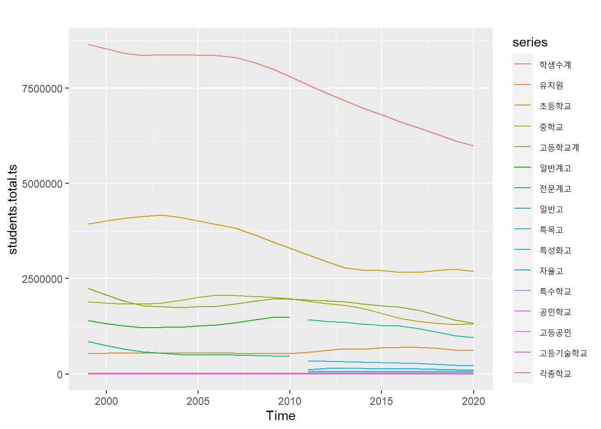
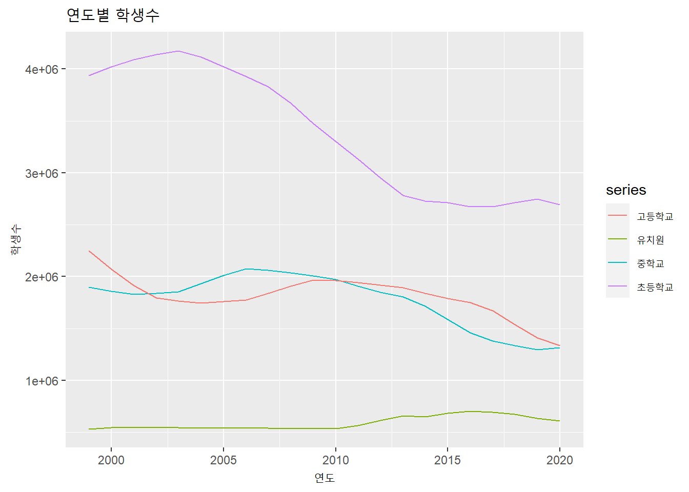
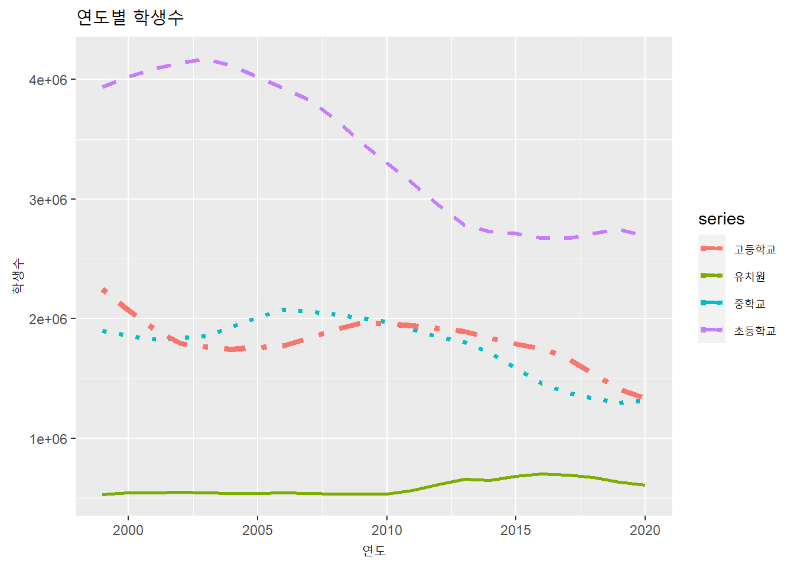
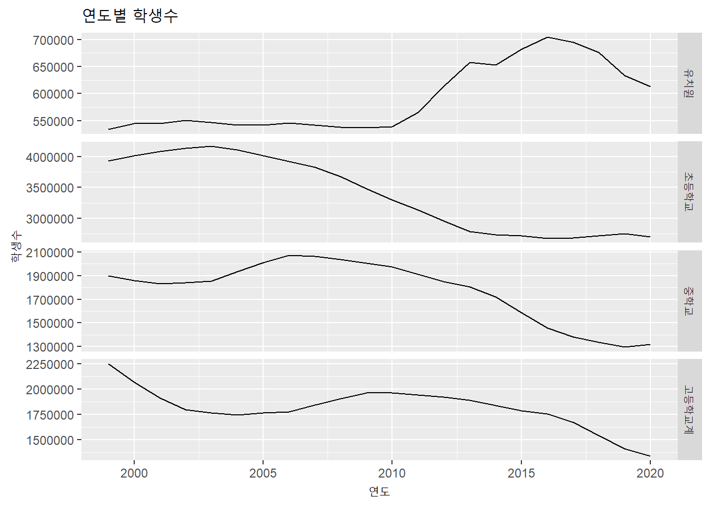
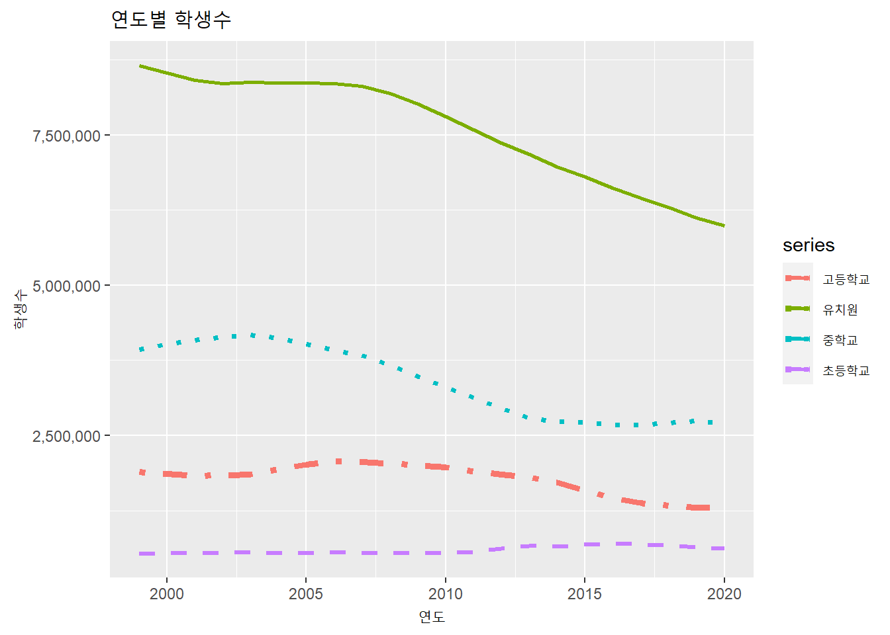
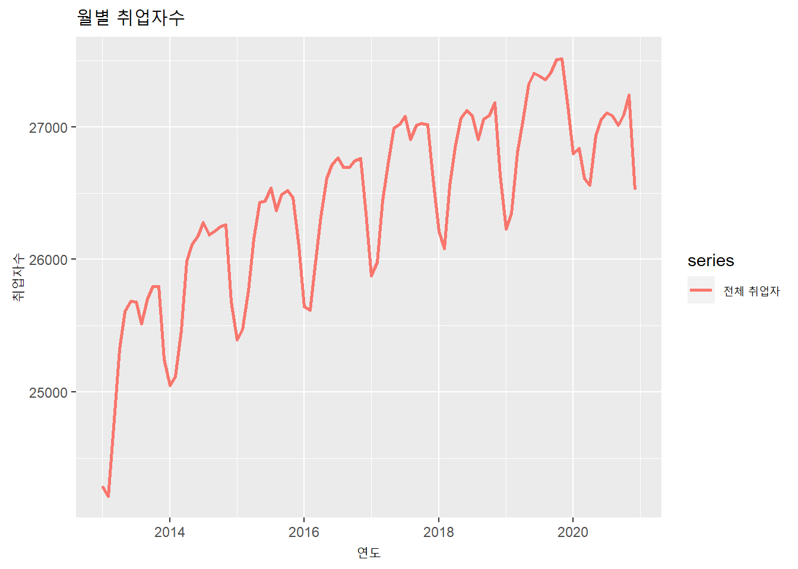
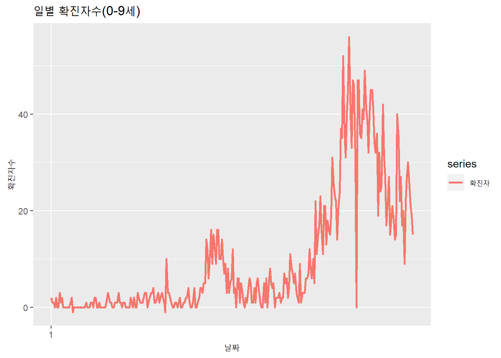

3.3 forecast
forecast 패키지는 시계열 자료의 시각화와 분석 방법과 도구를 제공하는 패키지로 호주의 Rob Hyndman교수가 주도하여 개발하였다.3 이 패키지는 단변량(Univariate) 시계열 데이터를 다루도록 설계되었고 ploting에는 ggplot2 패키지를 기반으로 사용하고 있다.
forecast 패키지에서는 시계열 ploting 방법으로 autoplot()함수를 제공하고 있다. 사실 forecast 패키지에서 사용하는 autoplot() 함수는 ggplot2에서 제공하는 함수이지만 ggplot2에서는 ts 데이터 클래스를 지원하지 않는다. 따라서 autoplot() 함수에 전달된 데이터가 ts 클래스인 경우는 ggplot2 패키지의 autoplot() 함수가 아닌 forecast에서 제공하는 autoplot() 함수(autoplot.ts 또는 autoplot.mts)를 호출하여 plot을 생성한다.
autoplot()는 ggplot2와 마찬가지로 geometries layer를 겹쳐가면서 최종 plot를 생성하는데 + 기호를 사용하여 autolayer() 함수를 통해 layer를 겹칠 수 있다.
autoplot()에서 사용하는 객체는 ts객체를 사용해야 한다.
library(forecast)
autoplot(students.total.ts)
autoplot 문법 및 plot 수정
autoplot : autoplot()함수에 전달되는 필수 매개변수는 최소 ts 또는 mts 클래스의 객체이다. 전달되는 객체가 여러 컬럼으로 저장된 다변량 데이터 인 경우 자동적으로 각각의 line plot이 생성된다. ggplot와 다른 점은 ggplot는 다변량 line plot를 생성하기 위해서는 다변량을 구분할 수 있는 컬럼과 다변량 정보를 저장한 컬럼이 필요하다. 그래서 spread() 함수를 사용해 넓은 형태의 data.frame을 좁은 형태의 data.frame으로 변경하는 작업을 수행하지만 autoplot()은 컬럼으로 구분된 다변량 데이터를 일괄적으로 ploting 할 수 있다는 점에서 다변량 plot를 쉽게 생성할 수 있다는 장점이 있다.
plot 제목 및 축 제목 : autoplot() 함수를 사용해 생성된 plot의 제목은 ‘main’ 매개변수를 통해 설정하고 X, Y 축의 제목은 ‘xlab,’ ‘ylab’ 매개변수를 통해 설정이 가능하다.
autoplot(students.total.ts[,1], main = '연도별 학생수', xlab = '연도', ylab = '학생수')
layer 추가 : 앞서 설명한 바와 같이 autoplot은 ggplot2 패키지를 기반으로 작성되었기 때문에 plot의 표현 방법도 ggplot2와 유사한 방법을 사용한다. ggplot2가 여러 Geometries를 표현할 때 layer를 겹쳐서 생성한 것과 같이 autoplot()도 여러 layer를 겹쳐서 plot을 생성할 수 있다. layer를 생성하는 함수는 autolayer()함수이며 autoplot() 함수 호출 후에 + 기호를 통해 계속 겹쳐서 layer를 생성할 수 있다. 이 경우 각각의 라인을 구분하기 위해 ‘series’ 매개변수를 이용해 legend에 표기될 이름을 설정할 수 있다.
autoplot(students.total.ts[,2], main = '연도별 학생수', xlab = '연도', ylab = '학생수', series = '유치원') + autolayer(students.total.ts[,3], series = '초등학교') + autolayer(students.total.ts[,4], series = '중학교') + autolayer(students.total.ts[,5], series = '고등학교')
라인 타입 변경 : 라인 형태는 ‘lty’ 매개변수, 라인 두께는 ‘lwd’ 매개변수를 통해 설정이 가능하다.
autoplot(students.total.ts[,2], main = '연도별 학생수', xlab = '연도', ylab = '학생수', series = '유치원', lty = 1, lwd = 1) + autolayer(students.total.ts[,3], series = '초등학교', lty = 2, lwd = 1.2) + autolayer(students.total.ts[,4], series = '중학교', lty = 3, lwd = 1.4) + autolayer(students.total.ts[,5], series = '고등학교', lty = 4, lwd = 1.6)
facet : 다변량 plot을 하나의 plot이 아닌 다중 plot을 사용하기를 원하는 경우는 ‘facet’ 매개변수를 TRUE/FALSE로 설정함으로써 가능하다.
autoplot(students.total.ts[,2:5], main = '연도별 학생수', xlab = '연도', ylab = '학생수', facet = TRUE)
그외 세부적인 plot의 변경은 ggplot에서 사용하는 방법을 준하여 사용할 수 있다.
autoplot(students.total.ts[,2], main = '연도별 학생수', xlab = '연도', ylab = '학생수', series = '유치원', lty = 1, lwd = 1) + autolayer(students.total.ts[,3], series = '초등학교', lty = 2, lwd = 1.2) + autolayer(students.total.ts[,4], series = '중학교', lty = 3, lwd = 1.4) + autolayer(students.total.ts[,5], series = '고등학교', lty = 4, lwd = 1.6) + scale_y_continuous(labels=scales::number_format(big.mark = ','))
autoplot(employees.ts[,2], main = '월별 취업자수', xlab = '연도', ylab = '취업자수', series = '전체 취업자', lty = 1, lwd = 1)
autoplot(wide.covid19.by.age.ts[,2], main = '일별 확진자수(0-9세)', xlab = '날짜', ylab = '확진자수', series = '확진자', lty = 1, lwd = 1)